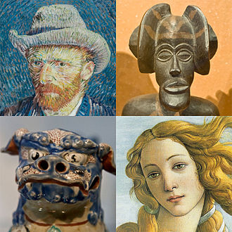
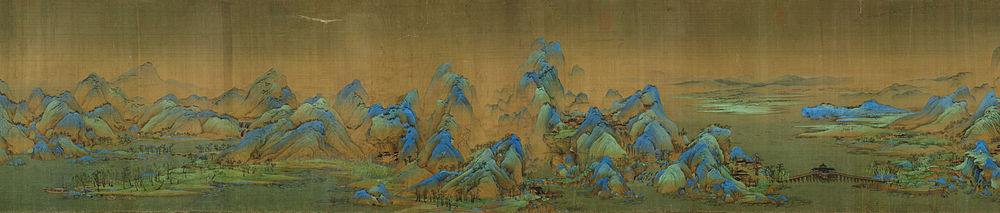
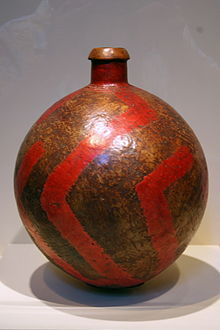
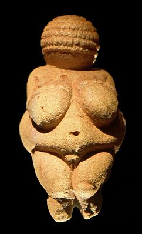
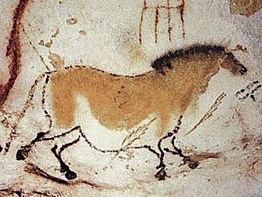

ხელოვნება — ადამიანის აქტივობების ფართო ცნება, რომელიც გულისხმობს ვიზუალური, აუდიო ან
გამომხატველობითი ნამუშევრების შექმნას, ავტორის წარმოსახვის ან ტექნიკური ნიჭის გადმოცემას,
რომლის მიზანია მშვენიერების ან ემოციური ძალის შეფასება. ხელოვნება ყველაზე უფრო განზოგადებული
ფორმით გულისხმობს: ხელოვნების ნიმუშების შექმნას, ხელოვნების კრიტიკას, ხელოვნების ისტორიის
შესწავლასა და ხელოვნების ესთეტიკის გავრცელებას, აღქმას.
ხელოვნების უძველეს ნიმუშებს წარმოადგენს ვიზუალური ხელოვნების ქმნილებები, რაც გულისხმობს
ნახატებისა და საგნების შექმნას ისეთ სფეროებში, როგორიცაა: მხატვრობა, ქანდაკება, გრაფიკა (ბეჭდვა),
ფოტოგრაფია და ვიზუალური მედიის სხვა საშუალებები.
არქიტექტურა ხშირად მიჩნეულია ვიზუალური ხელოვნების ერთ-ერთ ფორმად, თუმცა, როგორც დეკორატიული
ხელოვნება, ან რეკლამა, არქიტექტურა ობიექტების შექმნას გულისხმობს, სადაც პრაქტიკული გამოყენება
მთავარია, რაც მაგალითად მხატვრობისთვის სულაც არაა დამახასიათებელი.
მუსიკა, თეატრი, კინო, ცეკვა და სხვა გამომხატველობითი ხელოვნების ფორმები, ისევე როგორც ლიტერატურა
ან სხვა ინტერაქციული მედიის ფორმები, ფართო გაგებით ხელოვნებას მიეკუთვნება.
XVII საუკუნემდე ხელოვნებაში იგულისხმებოდა ნებისმიერი უნარი ან ხელოვნობა, ისევე როგორც
ოსტატობა/ხელოსნობა და მეცნიერება.
XVII საუკუნის შემდეგ თანამედროვე გაგებით, როდესაც ესთეტიკური აღქმა გახდა ძალიან მნიშვნელოვანი,
სახვითი ხელოვნება გამოყოფილია და ზოგადად გამოირჩევა სპეციფიკური უნარებით, როგორებიცაა დეკორატიული
და გამოყენებითი ხელოვნება.
ხელოვნება შესაძლოა დავახასიათოთ მიმეზისის (რეალობის გამოხატულება) ტერმინებით, ნარატივით, გ
ამომსახველობით, ემოციების კომუნიკაციით, ან სხვა მახასიათებლებით. რომანტიკული პერიოდის
დროს, ხელოვნება აღქმ
იყო როგორც ადამიანის გონების სპეციფიკური უნარი, თუ შევადარებთ
რელიგიასა და მეცნიერებას.
იმის განმარტება თუ რას შეადგენს ხელოვნება, საკამათოა და იცვლება დროთა განმავლობაში.
ხელოვნების ბუნება და მასთან დაკავშირებული კონცეფციები, როგორებიცაა კრეატიულობა და ინტერპრეტაცია
ესთეტიკის სახელით არის ცნობილი.
ხელოვნება შეიძლება დაეფუძნოს ფორმას, ფიგურას (ფერწერა, სკულპტურა), სიტყვას (ლიტერატურა),
ბგერას (მუსიკა), მოძრაობას (ცეკვა) ან მათ ჰიბრიდს (თეატრი, კინო, ოპერა).

კრეატიული და სახვითი ხელოვნება

ელოვნების ისტორიის კუთხით ხელოვნების ნიმუშები იმდენი ხანია არსებობს, რაც არსებობს ადამიანი.
დაწყებული პრეისტორიული ხელოვნებით, დამთავრებული თანამედროვე ხელოვნებით, თუმცა ზოგი თეორია
ეწინააღმდეგება „ხელოვნების ნიმუშების“ შინაარს, კონცეფციას თანამედროვე დასავლურ საზოგადოებებში.
ხელოვნების ერთ-ერთი ადრეული განმარტება მჭიდროდაა დაკავშირებული ლათინურ მნიშვნელობასთან,
რომელიც უხეში თარგმანით ნიშნავს „უნარს“ ან „ოსტატობას“, რაც ასოცირდება სიტყვასთან „ხელოვანი“.
ზოგი თანამედროვე სწავლული უფრო უპირისპირდება ერთმანეთს ხელოვნების მნიშვნელობასთან დაკავშირებით, ვიდრე პლატონი
და არისტოტელე, სადაც არისტოტელე მკაცრად მხარსუჭერს ხელოვნებას ზოგადად, ხოლო პლატონი უპირისპირდება ხელოვნების
მნიშვნელობას.
XX საუკუნის რვანდანის ბოთლი. ხელოვნების ნიმუშებს დეკორატიულ ღირებულებასთან ერთად, შესაძლოა,
პრაქტიკული გამოყენებაც ჰქონდეს.
პლატონის რამდენიმე დიალოგში წამოყენებული კითხვები ხელოვნების შესახებ: სოკრატე ამბობს, რომ პოეზია
ინსპირირებულია მუზების მიერ და ამდენად არ არის რაციონალური. იგი ამტკიცებს ამას, ისევე როგორც
ღვთაებრივი სიგიჟის ფორმებს (სიმთვრალე, ეროტიზმი და სიზმარი) „ფედრუსში“ და მაინც „რესპუბლიკაში“
გამოყოფს ჰომეროსის დიდ პოეტურ ხელოვნებას. „იონში“ სოკრატე არანაირ მინიშნებას არ იძლევა ჰომეროსზე
„რესპუბლიკისგან“ განსხვავებით. იონის დიალოგი გვარწმუნებს, რომ ჰომეროსის ილიადას იგივე ფუნქცია
ჰქონდა ძველ საბერძნეთში, რა ფუნქციაც აქვს ბიბლიას დღეს თანამედროვე ქრისტიანულ სამყაროში.
ლიტერატურულ ხელოვნებასა და მუსიკაზე დაყრდნობით არისტოტელე ეპიკურ პოეზიას, ტრაგედიასა
და კომედიას, როგორც მუსიკას მიიჩნევდა იმიტირებულ ხელოვნებად, მაგალითად მუსიკა იმიტაციაა
რიტმისა და ჰარმონიის, მაშინ როდესაც ცეკვა მხოლოდ რიტმის და პოეზია ენის. ეს ფორმები ასევე
განსხვავდება იმიტაციის საგნით. კომედია, მაგალითად დრამატული იმიტაციაა საშუალოზე უარესი
ადამიანების, მაშინ როდესაც ტრაგედია იმიტაციაა საშუალოზე უკეთესი ადამიანების და ბოლოს,
ფორმები განსხვავდება იმატაციის საშუალებით თხრობის ან გმირის, ცვლილების ან უცვლელობის,
დრამატულობის ან არადრამატულობის საშუალებით.
არისტოტელეს სწამდა, რომ იმიტაცია ბუნებრივია ადმიანისთვის და წარმოადგენს ადამიანის
უპირატესობას ცხოველზე.
მეორე და შედარებით უფრო ახალი დახასიათებით, რომელიც შეიქმნა XVII საუკუნის დასაწყისში, სიტყვა
ხელოვნება გულისხმობს კრეატიულ ან სახვით ხელოვნებას. სახვითი ხელოვნება ნიშნავს უნარს, რომელიც
გამოიყენება მხატვრის კრეატიულობის გადმოსაცემად ან მაყურებლების ესთეტიკური შეგრძნებების დასაკმაყოფილებლად.
გარდა ამისა, სიტყვა ხელოვნება შეიძლება ნიშნავდეს მრავალს: კრეატიული ნიჭის კვლევას, კრეატიული უნარის გ
ამოყენების პროცესს, კრეატიული უნარის პროდუქტს ან აუდიტორიის კრეატიულ უნართან დაკავშირებულ
გამოცდილებას. კრეატიული ხელოვნება დისციპლინათა ერთობლიობაა, რომელიც ქმნის ხელოვნების ნიმუშს
პიროვნული ემოციებით და აწვდის მესიჯს, განწყობას ან სიმბოლოებს აღქმნელს ინტერპრეტაციისთვის

ხელოვნება არის რაღაც, რაც წარმოქმნის ინდივიდუალურ აზრებს, ემოციებს, რწმენას ან იდეებს შეგრძნებების
მეშვეობით. ხელოვნების ნიმუში შესაძლოა იქნას შექმნილი ამ მიზნით ან ახსნილი ნახატების ან საგნების საფუძველზე.
ზოგიერთი მეცნიერისთვის, მაგალითად კანტისთვის, მეცნიერება და ხელოვნება უნდა იყოს განცალკევებული
იმით, რომ მეცნიერება არის ცოდნის სახლი, ხოლო ხელოვნება არტისტული გამოხატულების თავისუფლების სახლი.
ხშირად, თუ ეს უნარი გამოყენებულია პრაქტიკაში, ხალხი მას მიიჩნევს ხელოსნობად, ვიდრე ხელოვნებად.
მსგავსადვე, თუ ნიჭი გამოყენებულია კომერციულ ან სამრეწველო სფეროში, ის შეიძლება იქნეს მიჩნეული
ხშირად, თუ ეს უნარი გამოყენებულია პრაქტიკაში, ხალხი მას მიიჩნევს ხელოსნობად, ვიდრე ხელოვნებად.
კომერციულ ხელოვნებად სახვითი ხელოვნების ნაცვლად. მეორე მხრივ, ხელოსნობა და დიზანი ზოგჯერ
მიჩნეულია გამოყენებით ხელოვნებად, თუმცა სახვით ხელოვნებას გააჩნია ზოგ შემთხვევაში მიზნები
წმინდა კრეატიულობის და თვითგამოხატვის მიღმა. ხელოვნების ნიმუშების მიზანი შესაძლოა იყოს
იდეათა გაზიარება, პოლიტიკურად, სულიერად თუ ფილოსოფიურად მოტივირებული ხელოვნებით,
რათა შეიქმნას მშვენიერების აღქმა, გამოვლინდეს აღქმის ბუნება, სიამოვნებისთვისა თუ ძლიერი
ემოციების გენერირებისთვის. შეიძლება მიზეზი არც არსებობდეს.
ფილოსოფოსმა რიჩარდ ვოლჰაინმა აღწერა ხელოვნების ბუნება, როგორც „ადამიანთა კულტურის ერთ-ერთი
ყველაზე ილუზორული ტრადიციული პრობლემა“.
ხელოვნება აღწერილია, ასევე, როგორც გადამზიდი ემოციებისა და იდეების გამოხატვისთვის ან გაზიარებისთვის,
როგორც საშუალება ფორმალური ელემენტების აღმოჩენისა და აღქმისთვის.
ხელოვნებას, როგორც მიმეზისს ღრმა ფესვები აქვს არისტოტელეს ფილოსოფიურ ნააზრევში. ლევ ტოლსტოიმ
ხელოვნება მიამსგავსა კომუნიკაციის არაპირდაპირ ფორმას. ბენედეტო სროსე და რ. ჯ კოლინგვუდმა განავითარეს
იდეალისტური აღქმა, რომ ხელოვნება გამოხატავს ემოციებს და რომ ხელოვნების ნიმუში დიდწილად შემქმნელის
გონებაში არსებობს.
ხელოვნების თეორია, როგორც ფორმა სათავეს იღებს იმანუელ კანტის ფილოსოფიაში, ხოლო XX საუკუნის
დასაწყისში იგი როჯერ ფრაიმ და ქლაივ ბელმა განავითარეს.
მოგვიანებით, მოაზროვნეებმა, რომლებზეც გავლენა იქონია მარტინ ჰაიდეგერმა, ხელოვნება აღწერე
ს როგორც საშუალება რომლითაც საზოგადოება ვითარდება თავად თვითგამოხატვისთვის და
ინტერპრეტაციისთვის. ჯორჯ დიკიმ (ინგლ. George Dickie) შემოგვთავაზა ხელოვნების
ინსტიტუციური თეორია, რომელიც განმარტავს ხელოვნების ნიმუშს როგორც არტიფაქტს,
რომლითაც კვალიფიციური პიროვნება მოქმედებს სოციალური ინსტიტუტის სახელით.
ლარი შინერმა სახვითი ხელოვნება აღწერა როგორც „არა როგორც არსი ან ბედისწერა,
არამედ როგორც რაღაც, რაც ჩვენ შევქმენით“.
ხელოვნება — იმ ფორმით, რა ფორმითაც იგი ჩვენ დღეს გვესმის — 200 წლის წინანდელი ევროპული გამოგონებაა.
ისტორია
სკულპტურები, გამოქვაბულის ნახატები, ქვაზე ნახატები და პეტროგლიფები,
40 000 წლის წინანდელია და ზედა პალეოლითის ხანაშია აღმოჩენილია, მაგრამ
ამგვარი ხელოვნების ზუსტი შინაარსი ხშირად საკამათოა, რადგან ძალიან ცოტა
ინფორმაციას ვფლობთ იმ კულტურათა შესახებ, რომელთაც ზემოთაღნიშნული
ხელოვნების ნიმუშები შექმნეს.
უძველესი ხელოვნების ნიმუშები ლოკოკინის გახვრეტილი ბაკნები 75 000 წლის
წინანდელია და აღმოჩენილია სამხრეთ აფრიკის ერთ-ერთ გამოქვაბულში. 100,000
წლის წინანდელი კონტეინერები, რომლებსაც სავარაუდოდ საღებავის ჩასასხმელად
იყენებდნენ ასევე აღმოჩენილია.
2014 წელს კი აღმოაჩინეს ჰომო ერექტუსის მიერ დამზადებული 430 000 და 540 000
წლის წინანდელი ერთმანეთზე მიბმული ნიჟარები.
ლასკაუქსიs გამოქვაბულის კედელზე აღმოჩენილი ცხენის გამოსახულება, 16 000 ჩვ.წ
ხელოვნების ტრადიციის საფუძველი უძველესი ცივილიზაციების ხელოვნებაში უნდა ვეძიოთ:
ძველი ეგვიპტე, მესოპოტამია, სპარსეთი, ინდოეთი, ჩინეთი, ძველი საბერძნეთი, რომი, ისევე
როგორც, ინკა, მაია და ოლმეკი. უძველესი ცივილიზაციების თითოეულმა ცენტრმა განავითარა
მისთვის დამახასიათებელი გამორჩეული ხელოვნების სტილი. ცივილიზაციების ზომისა და
არსებობის ხანგრძლივობის გამო ბევრი ხელოვნების ნიმუში გადარჩა და დიდია მათი ზეგავლენა ს
ხვა კულტურებზე და შემდგომ ეპოქებზე. ზოგ ცივილიზაციას პირველი ჩანაწერებიც კი შემორჩა იმი
სა, თუ როგორ მუშაობდა არტისტი.

მაგალითად, ბერძნული ხელოვნების ეს პერიოდი ხასიათდება პატივისცემითა და მოკრძალებით
ადამიანის ფიზიკური ფორმების მიმართ და იმ შესაბამისი უნარების განვითარებით, რომლებიც საჭიროა ორგანიზმის
კუნთოვანი სისტემის, სხეულის პოზის, მშვენიერებისა და ანატომიურად სწორი პროპორციების გადმოსაცემად.
არაბული კალიგრაფია
ბიზანტიურ და შუა საუკუნეების ხელოვნებაში, უმეტესად ხელოვნება გადმოსცემდა ბიბლიური და რელიგიური კულტურის სუბიექტებს და გამოიყენებოდა სტილი, რომელიც აღწერდა სამოთხისეულ, ღვთიურ დიდებას, მაგალითად, ნახატებში გამოიყენებოდა ოქროსფერი უკანა ფონის დასამუშავებლად, ასევე შუშა მოზაიკებსა და ფაჯრებში, რაც ფიგურებს უფრო გაიდეალებულად წარმოაჩენდა. თუმცა კლასიკური რეალისტური ტრადიცია შენარჩუნდა ბიზანტიურ მცირე ნამუშევრებში, ხოლო რეალიზმი თანდათან გაიზარდა კათოლიკური ევროპის ხელოვნებაში.
აღორძინების ხანის ხელოვნებამ განსაკუთრებული მნიშვნელობა მიანიჭა მატერიალური სამყაროს რეალურად გამოსახვას და ადამიანის როლს მასში, რაც აისახა ადამიანის სხეულის რეალისტულ გადმოცემაში და გრაფიკული პერსპექტივის სისტემატიური მეთოდის განვითარებაში სამგანზომილებიანი სივრცის სიღრმის გადმოსაცემად.
აღმოსავლეთში, ისლამურ ხელოვნებაში იკონოგრაფიის აკრძალვამ განაპირობა გეომეტრიული
ფიგურების, კალიგრაფიისა და არქიტექტურის აქტუალურობა. დასავლეთში კი რელიგია დომინირებდა ხელოვნების სტილსა და ფორმებზე. ინდოეთმა და ტიბეტმა განსაკუთრებული მნიშვნელობა მიანიჭეს მოხატულ, ფერად სკულპტურებსა და ცეკვას, მაშინ როდესაც რელიგიურმა მხატვრობამ ბევრი რამ ისესხა სკულპტურიდან და მიდრეკილი იყო გაენათებინა კონტრასტული ფერები, რათა კონტურები უფრო მკვეთრი გამხდარიყო. ძველ ჩინეთში აყვავდა ხელოვნების მრავალი დარგი: ნეფრიტით რელიეფზე კვეთა, ბრინჯაოზე მუშაობა,
მეთუნეობა (საგულისხმოა იმპერატორი ქინის გამაოგნებელი ტერაკოტის არმია — The Terracotta
army of Emperor Qin) პოეზია, კალიგრაფია, მუსიკა, მხატვრობა, დრამატურგია, მხატვრული
ლიტერატურა და ა.შ. ჩინური სტილები განსხვავდება ეპოქასთან ერთად და თითოეულ მათგანს ეწოდა
მმართველი დინასტიის სახელი. მაგალითად, ტანის დინასტიის ნახატები მონოქრომატულია და არ არის
გადატვირთული, რაც ხაზს უსვამს იდეალიზირებულ პეიზაჟებს, ხოლო მინის დინასტიის ნახატები დატვირთული
და ფერადია, რომელშიც ისტორია მოყოლილია კომპოზიციის მეშვეობით.
მა ლინის ნახატი (Ma Lin,Song Dynasty) 1250 წ. 24.8 × 25.2 სმ
იაპონიაშიც, ჩინეთის მსგავსად, ხელოვნების სტილებს იმპერიული დინასტიის სახელი
ჰქვია და ასევე დიდია კალიგრაფიისა და მხატვრობის სტილების უერთიერთქმედება.
იაპონიაში კი XVII საუკუნის შემდეგ გრაფიკა გახდა მნიშვნელოვანი.
XVIII საუკუნის დასავლეთის საგანმანათლებლო ეპოქაში ყურადღება მიექცა ფიზიკური
და საათივით მომუშავე სამყაროს რაციონალური ჭეშმარიტების გადმოცემას ხელოვნებაში,
ისევე როგორც პოსტ-მონარქიული ეპოქის პოლიტიკურ და რევოლუციურ ხედვებს, როგორიცაა ბლეიკის მიერ შექმნილ
ი ნიუტონის პორტრეტი, როგორც ღვთაებრივი გეომეტრის. ან დავითის პროპაგანდისტული ნახატი. ამან მიგვიყვან
ა რომანტიზმის უარყოფამდე სურათის ემოციურობის და ადამიანის ინდივიდუალურობის სასარგებლოდ, რაც გამოიხატა გოეთეს რომანებში.
გვიანმა XIX საუკუნემ უმასპინძლა ისეთ მხატვრულ მიმდინარეობებს, როგორებიცაა აკადემიური ხელოვნება, სიმბოლიზმი,
იმპრესიონიზმი და ფოვიზმი სხვებთან ერთად.

XX საუკუნის ხელოვნების ისტორია უსასრულო შესაძლებლობების და ახალი სტანდარტების ძიების ნარატივია, სადაც ყ
ოველი შემდგომი მიმდინარეობა არის მის წინამორბედზე უკეთესი. ამდენად იმპრესიონიზმის პარამეტრები, ექსპრესიონიზმი,
ფოვიზმი, კუბიზმი, დადაიზმი, სიურეალიზმი და ა.შ ვერ იარსებებდა თუ არა ეს ეპოქა. ამ პერიოდი მზარდმა გლობალურმა
კავშირებმა გამოიწვია ის, რომ დასავლურ ხელოვნებაზე ექვივალენტური ზეგავლენა იქონია სხვა კულტურებმა. ამდენად,
იაპონურმა გრავირებამ (რომელიც თავად იმყოფებოდა დასავლური რენესანსული ხელოვნების ზეგავლენის ქვეშ) დიდი
გავლენა მოახდინა იმპრესიონიზმსა და მის შემდგომ განვითარებაზე. შემდგომში, აფრიკული სკულპტურების შექმნამ
გაიტაცა პიკასო და გარკვეულწილად მატისიც.
მსგავსად, XIX–XX საუკუნეებში დასავლეთმა მნიშვნელოვანი გავლენა მოახდინა აღმოსავლურ ხელოვნებაზე დასავლური
იდეებით, როგორებიცაა კომუნიზმი და პოსტმოდერნიზმი.
მოდერნიზმმა, სიმართლის იდეალისტურმა ძიებამ XX საუკუნის მეორე ნახევარში მოახდინა თავისი მიუწვდომლობის რეალიზება.
თეოდორ ადორნოს თვალსაზრისით „ხელოვნებაში არაფერია გარანტირებული — არც ხელოვნება თავისთავად, არც
ხელოვნება ზოგადად და არც მისი არსებობის უფლება“. რელატივიზმი მიჩნეულ იქნა უცილობელ ჭეშმარიტებად
რამაც მიგვიყვანა თანამედროვე ხელოვნებამდე და პოსტმოდერნისტულ კრიტიკამდე, სადაც სამყაროს და ისტორიი
ს კულტურა მუდამ ცვალებადი, საზოგადოების უმრავლესობისთვის გაურკვეველი, აღსაქმელად რთული, ბუნდოვა
ნი და ხშირად ურთიერთწინააღმდეგობრივი ფორმებითაა გამოხატული. ნიშანდობლივია, რომ კულტურათა განცალკ
ევება სულ უფრო კარგავს თავის კონტურებს და ზოგი ამტკიცებს, რომ ახლა უფრო მისაღებია ვიფიქროთ გლობალურად
ვიდრე ლოკალურად.